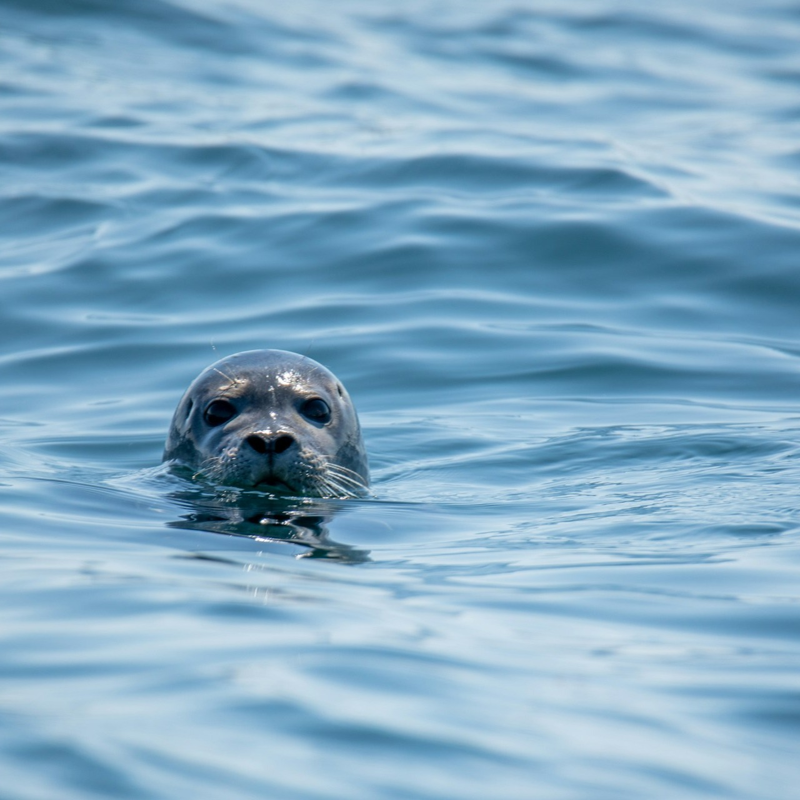

Harbour Seals (Phoca vitulina)
Created with Wikipedia & Unsplash

The harbor (or harbour) seal (Phoca vitulina), also known as the common seal, is a true seal found along temperate and Arctic marine coastlines of the Northern Hemisphere. The most widely distributed species of pinniped (walruses, eared seals, and true seals), they are found in coastal waters of the northern Atlantic and Pacific oceans, Baltic and North seas.Harbour seals are brown, silvery white, tan, or grey, with distinctive V-shaped nostrils. An adult can attain a length of 1.85 m (6.1 ft) and weigh up to 168 kg (370 lb). Blubber under the seal's skin helps to maintain body temperature. Females outlive males (30–35 years versus 20–25 years). Harbor seals stick to familiar resting spots or haulout sites, generally rocky areas (although ice, sand, and mud may also be used) where they are protected from adverse weather conditions and predation, near a foraging area. Males may fight over mates under water and on land. Females bear a single pup after a nine-month gestation, which they care for alone. Pups can weigh up to 16 kg (35 lb) and are able to swim and dive within hours of birth. They develop quickly on their mothers' fat-rich milk, and are weaned after four to six weeks.
The global population of harbor seals is 350,000–500,000, but the freshwater subspecies Ungava seal in Northern Quebec is endangered. Once a common practice, sealing is now illegal in many nations within the animal's range.
Photo Credits: Anna Storsul and Keith Luke via. Unsplash.